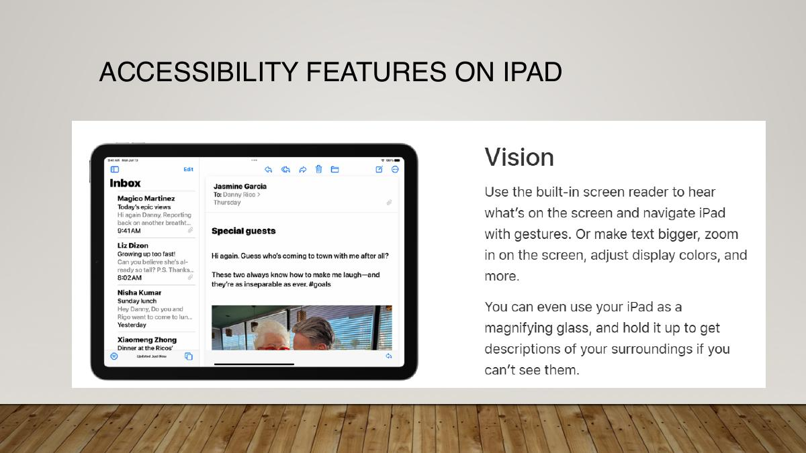
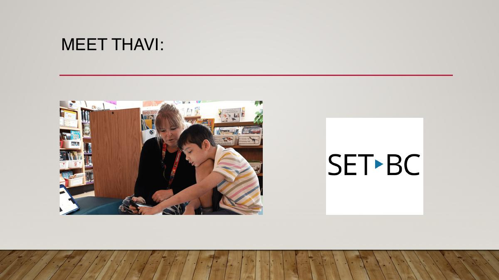
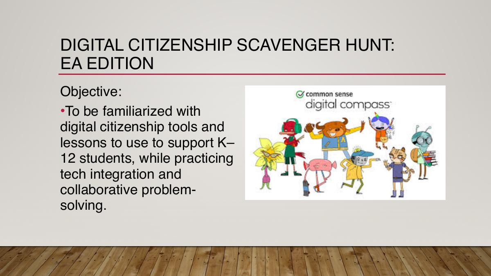
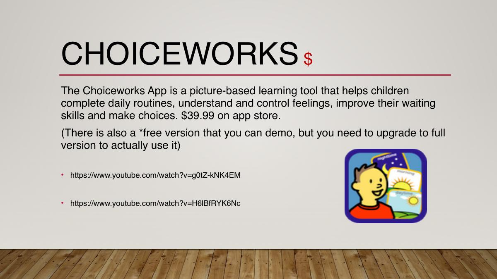

Purposeful iPad use and responsible digital participation
Day 2 moves from device setup to classroom application: use built-in accessibility features, control the learning environment with Guided Access, evaluate apps against real student goals, teach digital citizenship, and design visual schedules that build independence.
No section matches that search.
1. Treat the iPad as a learning environment
iPads are common in schools because they are portable, relatively simple to operate, adaptable to different learners, and able to combine text, audio, image, video, communication, and creative production.
Know the everyday controls first
Physical controls
Charging connection, volume controls, side or top button, camera, microphone, speakers, and—on some models—a Home button.
Navigation
Home Screen, Control Centre, App Switcher, search, gestures, folders, dock, notifications, and multitasking options.
Settings
Wi-Fi, Bluetooth, display, sound, storage, privacy, accessibility, app permissions, and software updates.
Preloaded apps such as Calendar, Camera, Photos, Clock, Notes, Maps, Voice Memos, and Safari can support math, documentation, schedules, research, reflection, and multimedia work without adding a new account.
Before handing over the device: confirm the app, learning purpose, account, network access, volume, battery, permissions, and planned ending. Decide how the student will ask for help and where completed work will be saved.
School context matters
District-managed iPads may use school Wi-Fi, managed accounts, approved apps, and mobile-device-management settings. The EA should follow the teacher’s plan and district procedures rather than changing accounts, installing unapproved apps, or modifying management settings.
2. Start with the accessibility features already built in
An iPad can adjust how information is seen, heard, touched, and controlled. Built-in features may provide immediate access and can also work alongside specialized apps or hardware.
| Access area | Examples of useful features | Possible classroom purpose |
|---|---|---|
| Vision | VoiceOver, Zoom, Magnifier, spoken content, larger text, display and colour adjustments, descriptions | Hear on-screen content, enlarge details, reduce visual barriers, or use the camera as a magnifier |
| Hearing | Captions, subtitles, mono audio, visual alerts, hearing-device support, Live Listen where available | Access speech and media through text, balanced sound, or supported listening |
| Physical and motor | AssistiveTouch, Switch Control, touch accommodations, keyboard control, voice control | Change the input method or reduce the precision, strength, or gesture demands of a task |
| Cognitive, attention, and reading | Guided Access, Speak Screen, Safari Reader, background sounds, display simplification | Reduce distractions, support decoding, provide audio, or focus the learner on the current task |

Feature names and menu locations may change with the iPadOS version. Check the device in front of you and avoid promising that every older model supports the same functions.
3. Use Guided Access to define the task—not to trap the learner
Guided Access temporarily keeps the iPad in one app and can limit selected controls. It can reduce accidental navigation, establish a time boundary, and make an instructional task easier to understand.
Set it up
- Open Settings → Accessibility → Guided Access and turn the feature on.
- Set a secure passcode known to the responsible adults. Use Face ID or Touch ID where the device and school procedure support it.
- Open the intended learning app, then use the configured accessibility shortcut—commonly a triple-click of the top or Home button.
- Circle any screen areas that should not respond to touch and open Options to set available controls.
- Choose whether the side button, volume buttons, motion, keyboard, touch, dictionary lookup, or a time limit should be available.
- Start the session. When finished, use the shortcut, authenticate, and select End.
Do not reuse the sample classroom passcode shown in the deck. Choose a secure local passcode and follow school procedures. Explain the limit to the learner and provide a predictable way to request help or finish.
Match settings to the learner and the app
Do not turn off every option automatically. A drawing activity may require touch and motion; an audio activity may need volume control; a timed independent task may benefit from a visible warning. The assignment asks you to justify which Guided Access controls you would use for one specific app.
4. Evaluate an app as part of a teaching plan
There is no universal “best app.” The useful app is the one that fits the learner, objective, context, access method, and team plan while meeting privacy and practical requirements.
Learning need
Name the skill or barrier precisely. Avoid using a diagnosis as the entire rationale.
Instructional quality
Look at modelling, practice, scaffolding, feedback, difficulty, generalization, and whether the learner is thinking.
Access
Test navigation, reading load, motor demands, audio, captions, contrast, language, switch or keyboard access, and Guided Access.
Privacy
Check accounts, advertising, tracking, saved work, photos, microphone, camera, contacts, and location permissions.
Practical use
Confirm cost, internet dependence, device compatibility, updates, storage, setup, and adult support.
Inclusion and data
Decide how peers participate and what useful progress information can be observed or collected.
The course recommends review collections from Common Sense Media, Common Sense Education lists, and the Educational App Store. A review is a starting point; test the current version yourself and check district approval.
Costs change: “Free” may mean advertising, limited content, a trial, account creation, or in-app purchases. Confirm what students can actually do without payment and whether purchases are protected.
5. Organize apps by function, not by novelty
The deck surveys many apps. The enduring study skill is to group them by the learning function they serve and then evaluate the current version.
| Purpose | What the learner might do | Examples named in class |
|---|---|---|
| Communication and language | Translate, answer questions, generate speech, practise conversational exchanges | Google Translate, Microsoft Translator, Duolingo, TouchChat |
| Literacy and storytelling | Read, create books, sequence images, record narration, write from prompts | Starfall, Book Creator, Pictello, PicCollage, Tell About This |
| Math and STEAM | Model concepts, calculate, observe nature, identify species, explore geography | ModMath, calculators, Google Earth, iNaturalist, Merlin Bird ID |
| Concept mapping and organization | Build visual maps, connect ideas, move from pictures to writing, plan tasks | Kidspiration, Inspiration Maps, Choiceworks |
| Practice and assessment | Review content, retrieve information, join quizzes, respond individually or as a group | Bitsboard, Kahoot, Quizlet, Plickers |
| Creation and presentation | Record audio, edit movies, animate characters, explain learning in a chosen format | Voice Record Pro, iMovie, ChatterPix, Puppet Pals |
| Physical, sensory, and vision support | Follow movement routines, regulate, access books, magnify, identify objects or text | PT/OT activity apps, Fluid, EasyReader+, Seeing AI, Be My Eyes |
| Life skills and self-determination | Practise routines, recognize emotions, wait, make choices, use schedules | My PlayHome series, social-story tools, Choiceworks |
Thavi’s example: tools work together
The SET-BC case in the deck describes a Grade 3 student using Clicker 8 for literacy development and Book Creator to make digital books, present ideas, share cultural experiences, and build confidence. The important factor is not one app: his teacher, EA, resource teacher, family, and SET-BC team all support consistent use.

6. Build the 20-point App Assignment
Choose one app, investigate its current features, and connect it to a specific student need, measurable IEP objective, Guided Access plan, data question, and inclusive classroom use.
| Criterion | Points | What a strong response includes |
|---|---|---|
| App name | 1 | Exact app and platform/version if relevant |
| Cost | 1 | Current price, subscription, trial, ads, and important in-app purchases |
| Internet requirement | 1 | What works online or offline and whether an account is required |
| What the app does | 5 | Specific activities, navigation, teaching function, feedback, and visual/audio experience |
| Learning need or profile | 2 | A precise need or learner profile—not only a broad label |
| IEP goal and objective | 5 | A broad goal plus a specific, measurable, achievable, results-oriented, time-bound objective |
| Data collection | 1 | What useful progress data the app or EA can record |
| Guided Access | 2 | The exact controls you would enable or disable and why |
| Inclusion | 2 | How the app supports participation in class, school, or peer activity |
| Total | 20 |
Assignment planner
Drafts save automatically in this browser.
Due in the source deck: August 6, 2026 at 11:59 PM. Confirm the deadline and submission location in Brightspace.
7. Teach digital citizenship as everyday participation
A good digital citizen communicates respectfully, protects privacy, evaluates information, respects ownership, manages attention and wellbeing, and knows how to respond to unsafe situations.
Relationships
Respectful communication, empathy, collaboration, boundaries, and responding to cyberbullying.
Privacy and security
Personal information, passwords, permissions, location, scams, account safety, and asking before sharing.
Information literacy
Authorship, evidence, bias, advertising, algorithms, manipulated media, and fact-checking.
Digital footprint
Understanding that posts, searches, images, and account activity can persist and affect other people.
Ownership
Copyright, citation, remixing with permission, and giving creators credit.
Wellbeing
Attention, sleep, movement, emotional response, balanced use, and getting adult help when needed.
The EA competency highlighted in the course is to recognize respectful online communication, privacy protection, and responsible use. Instruction should be concrete, accessible, practised in real situations, and adapted to the learner’s communication and cognitive needs.

Common Sense Education digital citizenship curriculum
Discussion: Which digital citizenship topic is most urgent for the learner you support? How could you teach it with plain language, visuals, modelling, rehearsal, and family-school consistency?
8. Design a Choiceworks schedule that teaches the routine
A visual schedule can show the whole sequence, clarify beginning and ending, make the next step predictable, and explain what to do at each stage. The schedule should increase understanding—not become a decorative checklist adults control.
Start with task analysis
- Choose one real school routine with a clear start and finish.
- Observe the routine and break it into small, teachable actions.
- Write each step in concise, concrete language from the learner’s point of view.
- Decide where a standard symbol is sufficient and where a personalized photo will be clearer.
- Use a self-made video only when movement, social action, or a process needs modelling.
- Add a timer only where a time boundary is meaningful and understandable.
- Offer choices that are genuinely available in that place and time.
- Teach the schedule, reinforce checking it, observe independence, and revise confusing steps.

20-point assignment requirements
| Criterion | Points | Requirement |
|---|---|---|
| Schedule title and picture | 2 | Name the schedule and describe the picture or symbol beside the title. |
| Eight tasks | 8 | Create an appropriate sequence with at least eight tasks. |
| Two choices | 2 | Offer two reasonable choices connected to the routine. |
| Three self-made photos | 3 | Identify three tasks or choices that benefit from personalized images. |
| Three self-made videos | 3 | Identify three tasks or choices for which personal video modelling makes sense. |
| Two timers | 2 | Choose two tasks or choices with a meaningful time limit. |
| Total | 20 |
Choiceworks planner
Drafts save automatically in this browser.
Due in the source deck: August 6, 2026 at 11:59 PM. Confirm the deadline and submit through Brightspace.
9. Review the central ideas
Open a card to check your explanation.
Why use an iPad in school?
It combines portable access, communication, creation, multimedia, personalization, and built-in accessibility in one device.
VoiceOver
A screen reader that speaks on-screen content and supports navigation with gestures.
Guided Access
A feature that keeps the device in one app and can limit controls, touch regions, or session time for a defined task.
Guided Access principle
Enable or disable only the controls needed for this learner and activity, and provide a predictable way to request help or finish.
App learning fit
The app should address a specific skill or barrier and connect to instruction, practice, feedback, progress, and participation.
App privacy check
Review accounts, personal data, tracking, advertising, permissions, saved work, and district approval before student use.
SMART objective
A specific, measurable, achievable, results-oriented, and time-bound statement describing expected student performance.
Digital citizenship
Safe, respectful, informed, ethical, and balanced participation in digital spaces.
Task analysis
Breaking a larger routine or skill into smaller, teachable actions in a usable sequence.
Purpose of a visual schedule
To show the sequence, clarify start and finish, make the next step predictable, and support understanding and independence.
Personalized photo
A real image of the learner’s environment, materials, or people used when a generic symbol is too abstract or unclear.
Meaningful choice
Two or more options that are genuinely available and acceptable within that setting and moment.
10. Day 2 knowledge check
Choose the best answer, then check the complete set.